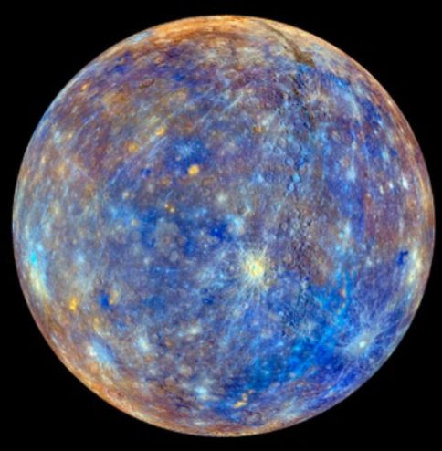

Mercurio
Es el que está más cerca del sol y también el más chiquitin. Es un planeta sin satélites en su órbita. Su superficie, cubierta de roca, y cráteres, se parece a la de la Luna.
su nombre es en honor a Mercusio, dios romano del comercio.
